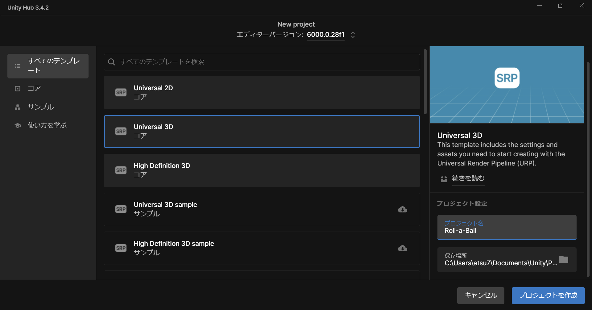
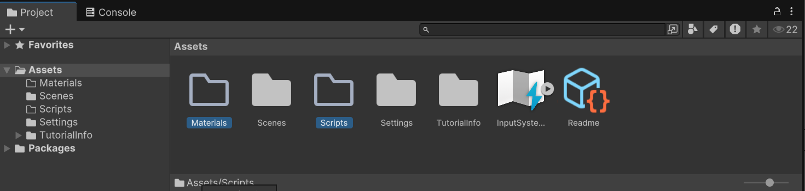
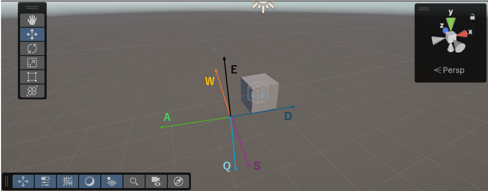
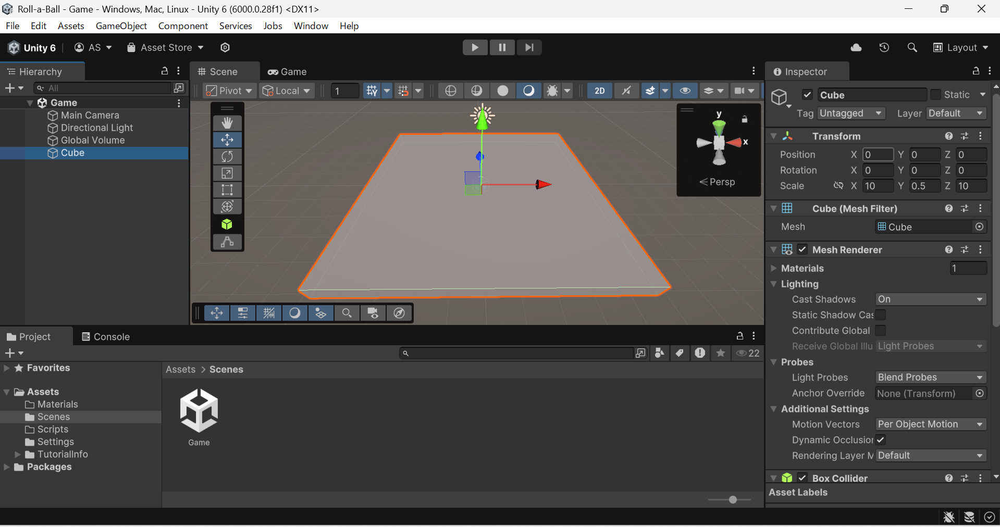
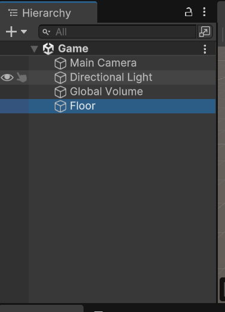
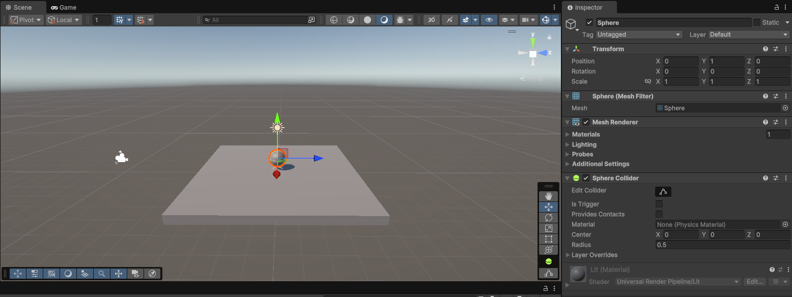
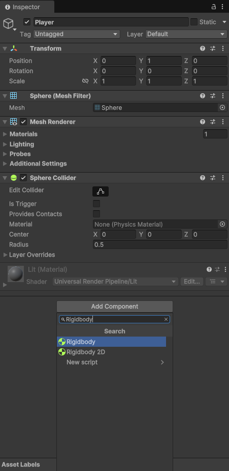

Universal3Dを選択して、名前はRoll-a-Ballとしてください。保存場所はお好みで大丈夫です。

プロジェクトが作れたらAssetsフォルダの下にScriptsフォルダとMaterialsフォルダを作成します。
さて、初級では出てこなかったシーンビューでの操作がでてきます。普段PCでゲームをする人は簡単かもしれませんが、初めての人は少し戸惑うかもしれません。

シーンビューでの操作方法：
これらの操作を覚えるとシーンビューでの操作が楽になります。3Dでゲームを作るなら必須の操作になるので直感的に操作できるようになるまで慣らしていきましょう
配置などの操作は2Dのときと同じなので省略します。画像のようにCubeを配置してください。座標やサイズを画像の通りにしておくと作るのが楽になるかもしれません。

配置したら、名前はFloorとしてください。これが床になります。

次に、プレイヤーが操作する玉を配置します。先ほど配置したCubeの真ん中にSphereを配置しましょう。

名前はPlayerとしてください。
現状プレイヤーにはSphere Colliderというコンポーネントが付いています。これは初級編で説明したように、当たり判定を付けるものです。
そして、冒頭の動画のように

これで、Playerが物理的な動きをするようになりました。
Rigidbodyコンポーネントと重力、衝突判定について学びます。
キーボード入力でボールを操作する方法を学びます。
ボールを追従するカメラの設定方法を学びます。